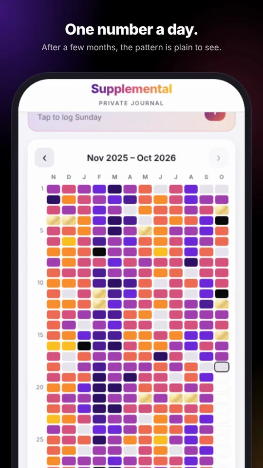
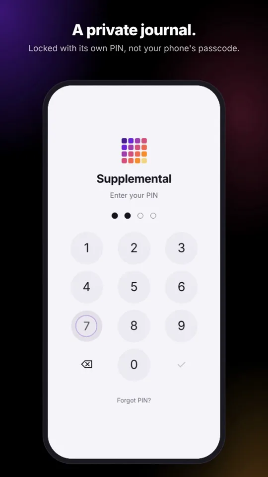
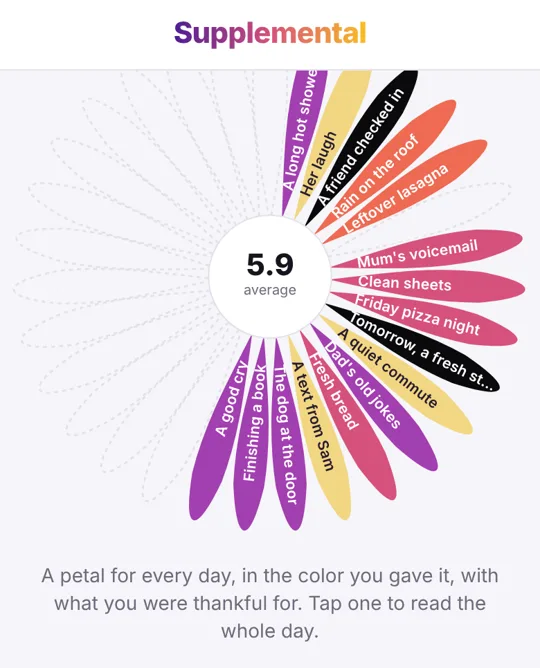

Supplemental
A private journal for your iPhone. One number a day, and over time you see the pattern.
Open the app View the code


What it does
- Log your day in a minute. A score from 1 to 10 and a line about how it went, with an optional "thankful for".
- See the pattern. A year-in-pixels heat map shows good and hard stretches you couldn't see day to day, in six color themes.
- Rank what's weighing on you. Keep a list of issues so the most important one gets your attention first, with prompts to think each one through. A board moves them from Noticed to Working on it to Resolved.
- Keep sight of the good stuff. Goals you're building toward, and a short weekly review of how each one moved.
- Every month blooms into a flower. A petal for each day, in the color you gave it, with what you were thankful for.
- Reminders. A daily Calendar reminder, and nudges to save a backup.
Private by design
- No account, no cloud, no tracking. Your journal never leaves your phone. The site counts anonymous visits without cookies, and never sees anything you write.
- Encrypted on your phone. AES-256-GCM, with a key derived from your PIN using Argon2id.
- Its own PIN, separate from your phone's passcode, with optional Face ID.
- Locks the moment you leave the app or lock your phone.
- A demo PIN opens sample data instead of your journal, so someone watching can't tell which one you typed.
- Works in airplane mode, because it never needed the internet.
- Open source under the MIT licence, so anyone can check these claims. The README also lists the limits honestly.
How to install
Supplemental isn't in the App Store. It's a web app that installs from Safari and then runs full screen, like any other app.
- Open supplemental.day in Safari on your iPhone.
- Tap Share (on newer iOS, tap the menu button left of the address first).
- Choose Add to Home Screen.
- Open it from the new icon and set your PIN.
It opens with demo data, so you can look around before you start.
Questions
Is it free?
Yes. No ads, no subscription and no account.
Where is my journal stored?
Only on your phone, encrypted. You can save encrypted backup files yourself, protected by a passphrase.
What if I forget my PIN?
There is no recovery. Without the PIN, or a backup and its passphrase, nobody can read the journal, including you. Keep a backup.
Does it work on Android or a computer?
It's designed for iPhone and also runs on iPad. Other browsers can open it, but it's built and tested for Safari.